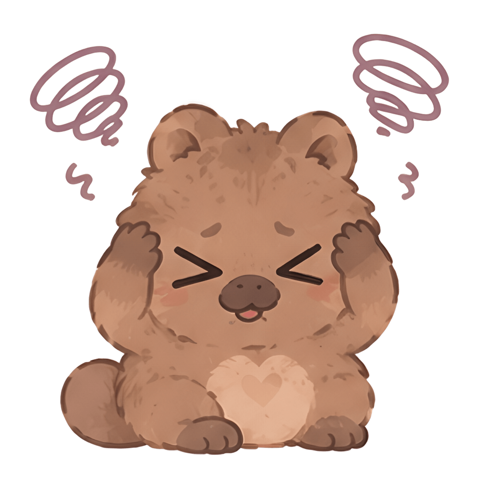

Эмоциональное состояние
Не всегда это диагноз — но всегда важно. Чувства — это сигналы, и их можно понять.
Что ты чувствуешь сейчас?
😟 Тревога
Как это ощущается:
Почему так бывает
Тревога — способ мозга подготовить нас к опасности. Иногда он «перестраховывается» и включает тревогу, даже когда опасности нет.
✨ Попробуй прямо сейчас: «5-4-3-2-1»
Назови 5 вещей, которые видишь, 4 — которые можешь потрогать, 3 — которые слышишь, 2 запаха и 1 вкус. Это возвращает внимание в «здесь и сейчас».
Если тревога почти постоянная и мешает учиться, спать или общаться, загляни в раздел «Тревожные расстройства» и поговори со специалистом.
😣 Постоянный стресс
Как это ощущается:
Почему так бывает
Стресс помогает собраться в трудный момент. Но когда он не выключается неделями, организм устаёт: портится сон, болит голова, всё раздражает.
✨ Попробуй прямо сейчас: «Разгрузка головы»
Выпиши на бумагу всё, что тревожит. Отметь, на что ты можешь повлиять сегодня, и выбери один маленький шаг. Остальное подождёт.
Если из-за стресса пропал сон, часто болит голова или живот, расскажи об этом взрослому, которому доверяешь.
🪫 Выгорание
Как это ощущается:
Почему так бывает
Выгорание приходит после долгого напряжения без отдыха. Это не лень: силы просто закончились, и им нужно восстановиться.
✨ Попробуй прямо сейчас: «Настоящий отдых»
Запланируй 20 минут без учёбы и телефона: прогулка, музыка, рисование. Отдых — это тоже важное дело, а не потеря времени.
Если ничего не радует дольше двух недель, посмотри раздел «Настроение».
🙈 Низкая самооценка
Как это ощущается:
Почему так бывает
Самооценка складывается из того, что мы слышим о себе от других и говорим себе сами. Внутренний критик часто бывает несправедливо строгим.
✨ Попробуй сегодня: «Три вещи»
Вечером запиши три вещи, которые у тебя получились за день, даже совсем маленькие. Через неделю перечитай.
Если мысли о себе стали очень жёсткими и не отпускают, с этим можно прийти к психологу.
🐌 Потеря мотивации
Как это ощущается:
Почему так бывает
Мотивация падает от усталости, страха ошибиться или когда цель кажется слишком большой и далёкой.
✨ Попробуй прямо сейчас: «Правило 5 минут»
Договорись с собой заняться делом всего 5 минут. Часто самое сложное — начать, а дальше идёт легче.
Если не хочется вообще ничего и уже долго, это может быть связано с настроением.
😔 Чувство вины и стыда
Как это ощущается:
Почему так бывает
Вина говорит: «я поступил(а) плохо», а стыд — «я плохой(ая)». Вина помогает исправить ошибку, а стыд чаще просто ранит.
✨ Попробуй прямо сейчас: «Как другу»
Представь, что это случилось с твоим другом. Что бы ты ему сказал(а)? Попробуй сказать то же самое себе.
Если тебе стыдно из-за того, что кто-то причинил тебе вред, — это не твоя вина. Расскажи взрослому или позвони на линию 150.
🫥 Непонимание
Как это ощущается:
Почему так бывает
Это чувство знакомо очень многим подросткам: ты меняешься, и не всегда сразу находишь «своих» людей.
✨ Попробуй сегодня: «Одно сообщение»
Напиши одному человеку, с которым тебе хоть немного комфортно. Или загляни в наше сообщество — там есть те, кто чувствует похоже.
Если одиночество давит постоянно, с этим можно прийти к психологу или позвонить на линию 150.
Подыши вместе с Квокой
Следи за кругом: когда он растёт — медленно вдыхай, когда уменьшается — медленно выдыхай. Повтори несколько раз.
Все чувства
имеют право быть.
Ты справишься ♡